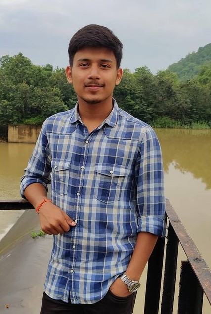
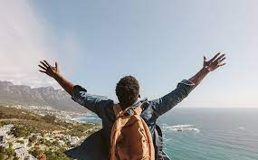
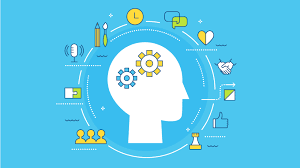

 My name is yash jain. I am a first year btech studen. Everyone can agree that I am a good student and that I like to study. My favorite subjects are mathematics and programing. I entered the university because my goal is to study these subjects in future and to become a respected professional in one of the fields. I can say that I am a responsible and a hard-working student. Moreover, being a sociable person, I have many friends since I like to communicate with people and get to know new interesting individuals. I enjoy my time at school: it is really nice to study, the students are very friendly and ready to help. The atmosphere cannot but make me want to go there every time. I like to receive and deal with challenging tasks. I am a very enthusiastic student and I think this is a strong point of mine. My friends say that I am a very funny and an interesting boy with a good sense of humor. As soon as I meet new people who are happy to meet me, I feel extremely comfortable with them. I believe that friendship is one of the most important values in human life. We exchange new ideas, find many interesting things about each other and experience new things. I appreciate friendship and people who surround me. Meeting new people who support all my efforts to grow and develop my skills not only in the subjects but also in my hobbies gives me a lot of energy. Many of those friends who surround me now I met on the street while doing my hobby.
 What to speak about this stimulating interest? Traveling is another pastime which compels me to stopover a new place, city, beach, village or mountain. It is consequently exciting to observe a new place and convene various types of citizens. Traveling allows me to employ my talent in photography. I always keep camera with me whenever I trip to a newer place and then I prefer capturing the photo-shots of buildings, people, marketplaces, and shrines of that place. In this way, I wisely spend my leisure time.I also love to travel, because being in a new place means I’m allow to indulge and spoil myself. Pampering myself has become even more important on solo trips in my 30s, honestly.I deeply believe travel makes you richer, not in your wallet, but in your intelligence and compassion. Not to mention, roaming this planet makes you realize your full potential and helps you learn what makes you truly happy. Let’s break it down.
 The most important purpose of living my life in an effective and peaceful manner is always be honest whatever you do, be persistent and be delegated towards my work. Here I’m going to represent my current skills and knowledge and make analyze of those skills required for my future career. As a matter of fact, my teamwork skills developed from my childhood. Nevertheless, its improved by doing group presentations, assignments with my groupmates. I believe that, having teams can result in faster and efficient outputs with better decision making skills. “Coming together is a beginning. Keeping together is progress. Working together is success”(Ford, 1923). Comparatively, there are various advantages of teamwork for career development. For instance, It improves profitability as well as productivity as all the employees are highly motivated and skilled. A business or cooperation will not survive unless all members work as one team. Accordingly, people all want to be successful in their working as it also brings happiness to them. To do this, there are considerable numbers of skills which they need to have. There are several learning outcomes that I gained from different modules during study foundation year at university. Those outcomes helped me identify my academic and personal skills, which I’m going to improve during year 2 and year 3. Furthermore those skills provide the basic foundation to get, keep and progress on a job and to achieve the best results.